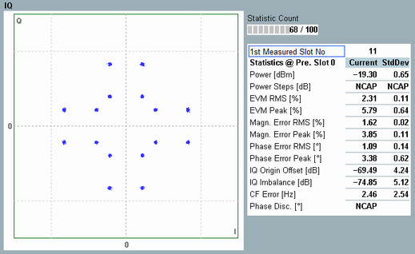

Detailed Views: I/Q Constellation Diagram
The constellation diagram shows the modulation symbols as points in the I/Q plane.

WCDMA multi-evaluation: I/Q constellation diagram
The constellation diagram depends on the modulation type. For an ideal single QPSK signal, the constellation diagram consists of four points on a circle around the origin, with relative phase angles of 90 deg. If several physical channels with different power levels contribute to the analyzed signal, more constellation points occur. The example above shows a signal configuration including high-speed channels.
For QPSK signals, select the correct orientation of the diagram to determine correct I/Q imbalance results, see parameter "Rotation".
See also: "I/Q Constellation Diagram"
For additional information, refer to "Common View Elements".